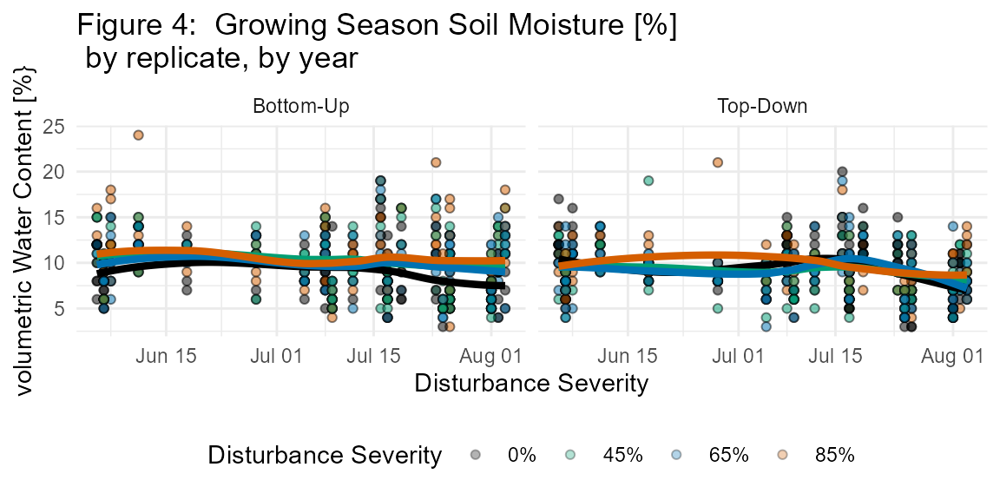

fortedata: Aboveground Wood Data
Maxim S. Grigri and Jeff Atkins
2021-03-11
Source:vignettes/fd_aboveground_vignette.Rmd
fd_aboveground_vignette.RmdAboveground Wood Background and Introduction
Carbon (C) storage in wood is an essential C sink that is increasingly impacted by a broadening range of disturbance types and severities in North America (refs). The FoRTE experiment offers a unique opportunity to evaluate the immediate changes in aboveground wood production after disturbance that may have long-term implications for ecosystem C cycling dynamics (refs). As girdled tree wood production declines, ungirlded trees across canopy strata are likely to benefit from newly liberated resources (refs), however the timing and magnitude of these changes are not well understood. The ability of surviving trees to compensate for declines in girdled tree wood production is paramount to ecosystem C cycling stability after disturbance. Further, the continued monitoring of wood production after disturbance across canopy strata will provide an understanding of the long-term mechanisms that support functional stability or decline across a range of disturbance types and severities.
All canopy strata in the FoRTE experiment were sampled for either diameter at breast height (DBH) or basal diameter and height on an annual or sub-annual timescale. Canopy strata are described as follows: upper canopy (≥8cm DBH), subcanopy (1-8cm DBH), and seedling/sapling (<1cm DBH or <1.3m height).
Aboveground Wood Functions
The fd_aboveground_wood() script within fortedata currently includes the following functions
fd_upper_canopy()returns a single dataset of [number of records] dendrometer band measurements (in) at ~1.3m stem height collected by hand from a subsample of trees >= 8cm DBH from all 32 subpots of the FoRTE experiment. [potentially add more description here?]fd_subcanopy()returns a single dataset of [number or records] diameter at breast height (DBH; mm) measurements of a subsample of trees 1-8 cm DBH from all 32 subplots of the FoRTE experiment.fd_seedling_sapling()returns a single dataset of basal diameter (cm), current height (cm), and height (cm) from a subsample of trees < 1 cm DBH or < 1.3m height from all 32 subplots of the FoRTE experiment.fd_subcanopy_density()returns a single dataset of subcanopy (1-8cm DBH) stem density within one quarter (0.025 ha) of all 32 subplots in the FoRTE experiment. Stem density survey were conducted during the 2019 field season.
fortedata::fd_soil_respiration()
## Warning in data_conditions(flux, published = FALSE, contact_person, citation):
## These data are unpublished. Please contact Kayla Mathes to ask about using
## Data citation: ESSD
## Contact person: Kayla MathesAboveground Wood Methods
Upper Canopy Dendrometer Bands
In the summer of 2018, a subsample of (# of banded trees) upper canopy stems stratified by species, diameter size class and experimental treatment (girdled/ungirdled) were outfitted with custom made stainless steel dendrometer bands at ~1.3m height across all 32 subplots. Custom ruler stickers on the dendrometer bands measured incremental changes in stem circumference (in). DBH and initial dendrometer band measurements were recorded in November 2018 with subsequent observations in April 2019, weekly from May to August 2019, November 2019, July 2020, and Novemeber 2020. Growth increments, relative growth rates, and aboveground wood net primary production (ANPPw) can be derived using a suite of methods described in Grigri et al. (2020).
Subcanopy Diameter and Stem Density
A subsample of (# of stems) subcanopy stems were randomly selected across all 32 subplots. For each subplot, all subcanopy stems within each 2m^2 vegetation nested subplot [see fortedata: Experimental Design and Tretment] were identified to the species level and sampled for DBH (mm) using digital calipers. If no subcanopy stems were present in a nested subplot, the two closest stems to the nested subplot were selected to ensure a minimum of eight stems per subplot. Observations began in May 2019 and continued bi-weekly through August 2019 with subsequent observations in November 2019, July 2020, and November 2020. Additionally, subcanopy stem density surveys were conducted during the 2019 field season in one randomly selected quarter of each subplot (0.025 ha). Growth increments, relative growth rates, and ANPPw can be derived using a suite of methods described in Grigri et al. (2020).
Seedling and Sapling Base Diameter and Height
To complete the assessment of aboveground wood response to disturbance, all seedling sapling stems within one randomly selected quarter of each 2m^2 vegetation nested subplots [see fortedata: Experimental Design and Tretment] were identified to the species level and measured for basal diameter using digital calipers, current height, and height from the previous season via branch scars. Data were collected in June 2019, August 2019, and July 2020. Growth increments and ANPPw can be derived using suite of methods described in Grigri et al. (2020).
## Data citation: ESSD
## Contact person: Kayla Mathes
PhD Student Kayla Mathes taking measurements with the Li-Cor 6400
Additionally, to isolate the microbial component of Rs, Heterotrophic soil respiration (Rh) was estimated with in vitro root-free soil incubations from 132 soil sampling plots in July 2019. Each of the 32 subplots contained four 1 meter squared destructive soil sampling plots and 3 pseudo-replicate soil cores were harvested to 10 cm in each destructive plot. Soil cores were stored for 24 hours at 4°C before being processed and were then sieved to eliminate roots. Root-free soil was then weighed into ventilated mason jars and incubated at the average soil temperature (Ts) for two weeks. Rh was measured with a LI-6400 and custom soil chamber cuvette (Curtis et al. 2005). Four efflux values were recorded in each mason jar over 90 second intervals. Soil jars were vented for 75 mins to stabilize gas exchange before measuring (time to stabilization was determined from a degassing trial with a randomized subset of soil jars, n = 5). These data are not in the current version of fortedata.
Soil Micrometeorology
Soil temperature (Ts) and soil moisture (s) were measured concurrently with in situ bulk Rs and soil cores harvested for in vitro Rh. Ts (°C) was measured to 7 cm using a thermocouple wire fitted to the LI-6400. Volumetric water content (%) was measured with a CS620 soil moisture sensor with 20 cm probes.
